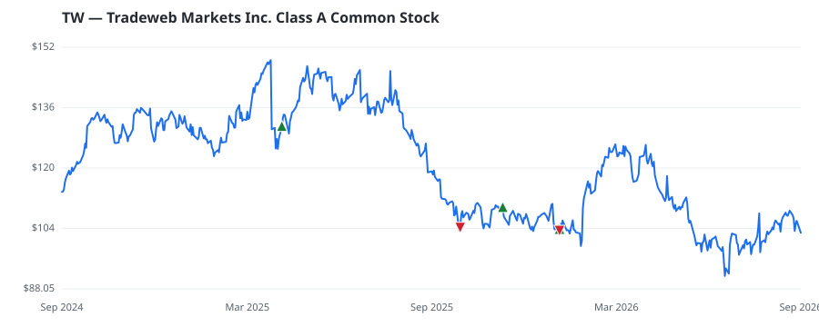

bullish · bearish · n/a — dots: price>SMA10 · SMA10>SMA50 · SMA50>SMA200 · up>down volume (20d)
Diversified Financials · large cap · ★ 1 buyer(s) sit on a committee that regulates this industry
Members who bought TW earned a dollar-weighted -9.4% from their disclosure dates, versus +16.3% for the S&P 500 over the same holding windows (-25.7% alpha).

▲ green = a disclosed purchase · ▼ red = a disclosed sale (plotted on disclosure date)
Founded in 1998 and headquartered in New York City, Tradeweb Markets is a leading fixed-income trading platform. While it does offer electronic processing for some voice-negotiated trades, the company focuses primarily on providing electronic trading networks that connect broker/dealers, institutional clients, and retail customers. While the company offers trading in a wide variety of products, the bulk of its business is in US and European government debt, mortgage-backed securities, interest-rate swaps, and US and international corporate bonds. The firm also sells fixed-income trading and pr SECURITY & COMMODITY BROKERS, DEALERS, EXCHANGES & SERVICES · website
| Revenue | $2.1B | Net income | $921.5M |
|---|---|---|---|
| Operating income | $835.3M | Diluted EPS | $3.78 |
| Assets | $8.2B | Equity | $7.2B |
| Member | Chamber | Out-performer | Disclosed buys $ | Return on buys |
|---|---|---|---|---|
| Byron Donalds ★ | house | — | $32K | -11.7% |
| Julia Letlow | house | — | $8K | +0.0% |
Disclosed $ figures are bracket midpoints — filings report ranges (e.g. $1,001–$15,000), not exact amounts.
| Fund | Fund alpha vs SPY | Position | % of book |
|---|---|---|---|
| THORNBURG INVESTMENT MANAGEMENT INC | +5% | $2M | 0.0% |
| DUTCH ASSET Corp | +5% | $0M | 0.1% |
| Ninety One SA (PTY) Ltd | +16% | $0M | 0.0% |
Hedge data: SEC EDGAR 13F · ranked funds beat SPY in >50% of their quarters · fund alpha = mirror-portfolio return minus SPY.